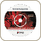
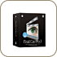
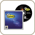

Hardware Specifications
|  | CinéAcquire CinéAcquire is a powerful application that expands the video graphics design capability of any CinéWave-equipped Power Mac G4 by providing direct, frame accurate, machine control for sophisticated video capture and record to tape. CinéAcquire works as both a stand-alone application and as a plug-in module for Pinnacle Systems Commotion Pro and Adobe After Effects. CinéAcquire allows users to efficiently perform critical tasks such as frame grabs and batch captures with complete RS-422 deck and device control in NTSC/PAL and widely used HD formats. CinéAcquire includes support for the 720p High Definition format, FireWire (IEEE 1394) deck and device control, frame capture with timecode, import and export of Final Cut Pro, and tab delimited batch lists and record-to-tape functions. CinéAcquire also includes the Pipeline Digital RS-422 Device Control Cable for easy connectivity to VTRs and other external devices. CinéAcquire is now included with all new CinéWave systems and can also be ordered independently from a preferred Pinnacle Systems' CinéWave reseller. |
|  | Final
Cut Pro Can create high-quality video easily and affordably. Final Cut Pro is the only software in its class that combines professional editing, compositing, and special effects capabilities in one flexible and highly productive program. |
 |
Commotion Pro Pinnacle Systems’ Commotion Pro combines the power of the paintbrush with intuitive compositing and effects tools. You get powerful rotoscoping tools, high-accuracy motion tracking for realistic effects or fixing shaky shots, a paint system written from the ground up to ensure quality retouching, and world-class effects tools used by thousands of professionals worldwide. |
|  | Knoll Light Factory Get the most widely used lighting effects tool. You've seen light effects and lens flares in major TV broadcasts and feature films. Now you can create an unlimited number of lighting effects and lens flares with an unprecedented level of precision and control. |